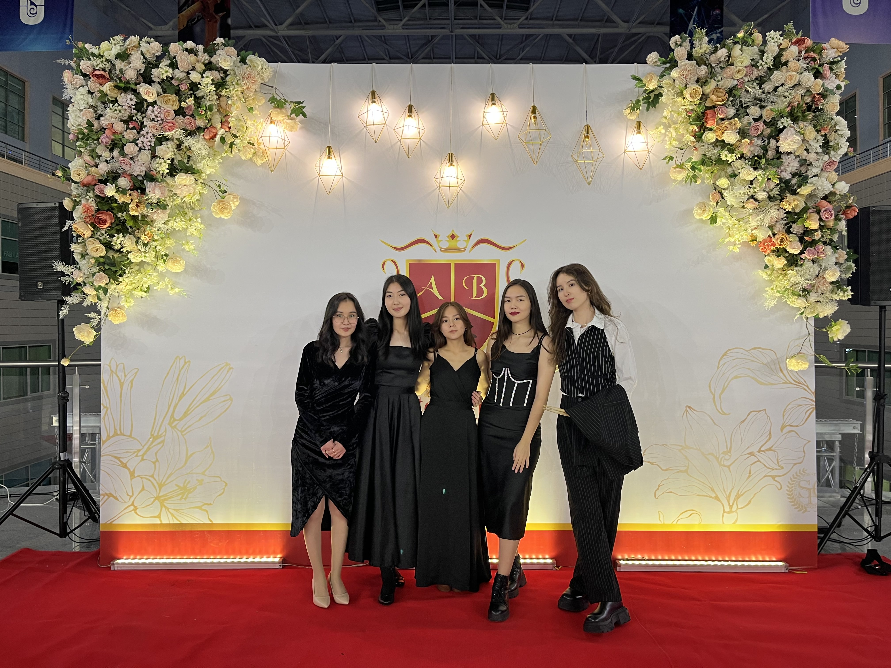
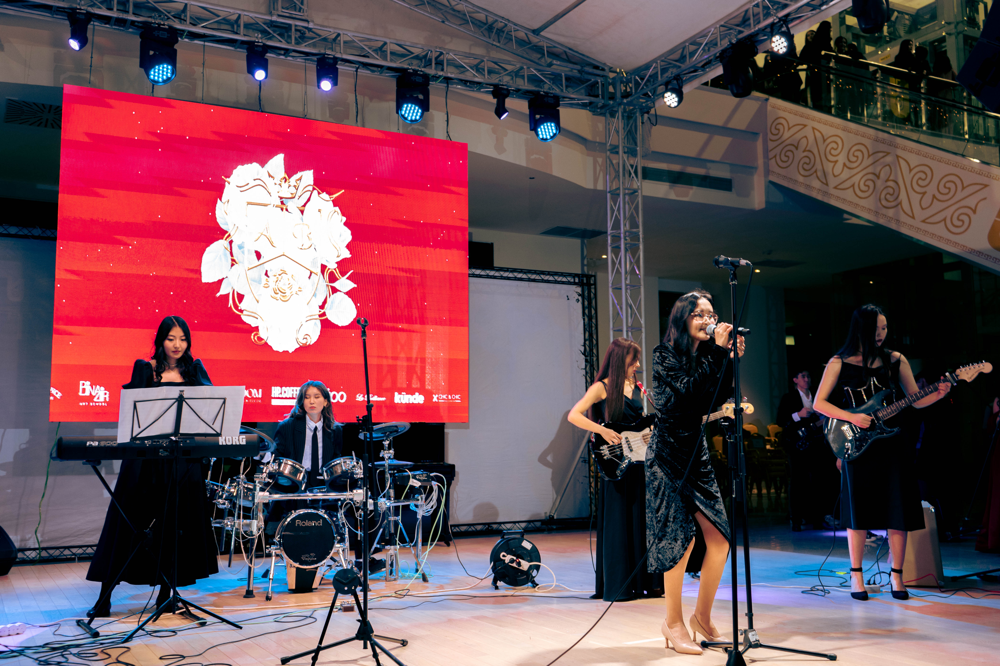
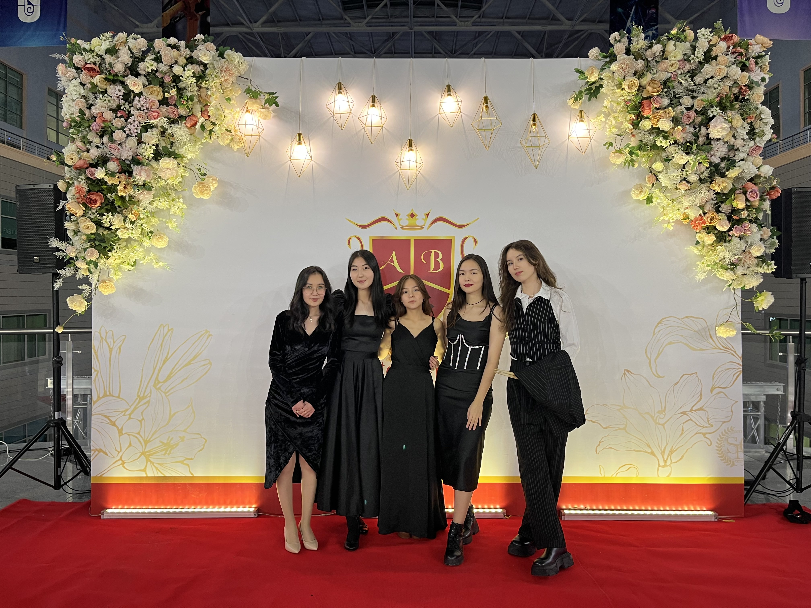
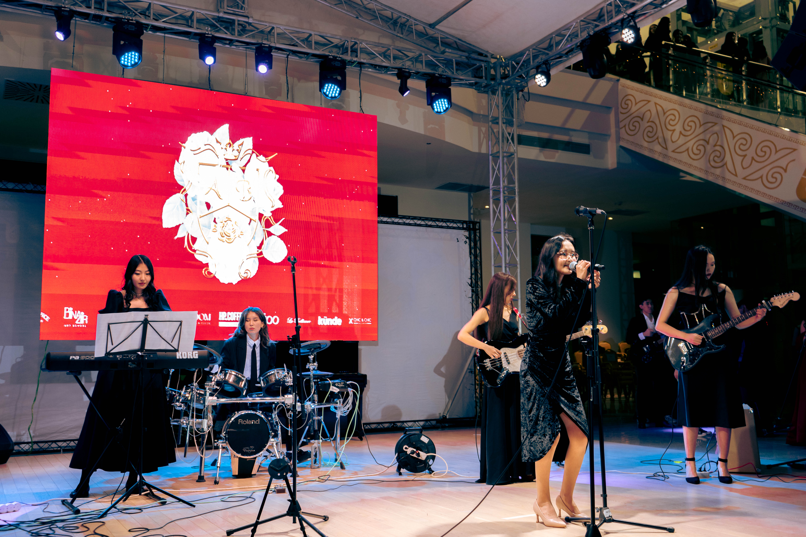

My Love for Music
Besides my professional interests, I also have multiple hobbies that are of huge interest to me, the biggest one being music. All of my family members play some kind of instruments: my dad plays guitar and bass, my mom and sister play piano. Being surrounded my music ever since my childhood I have decided to pick up playing on guitar, drums and bass.
 


